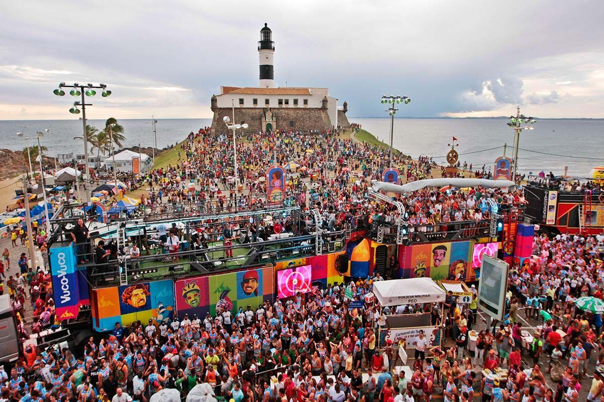

Os trios elétricos fazem parte dos circuitos com os shows mais disputados. Os gêneros mais tocados são o axé, o Olodum e o afoxé, marcados pela guitarra baiana. Os camarotes e a famosa pipoca são locais para pular o Carnaval. os blocos afro, com manifestações inspiradas na cultura africana e os blocos do Olodum e da Timbalada, que agitam os foliões e apresentam gêneros musicais típicos da cultura local.
